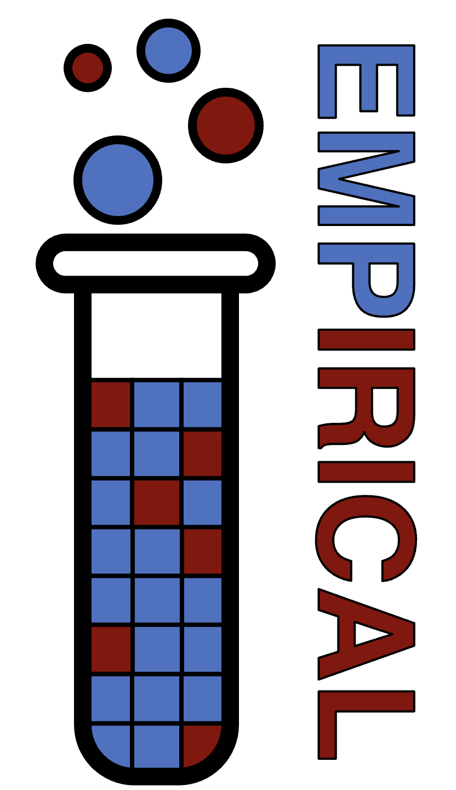

Charles Ofria is a Professor of Computer Science and Engineering at Michigan State University
and the director of the BEACON Center for the Study of Evolution in Action.
His research lies at the intersection of Computer Science and Evolutionary Biology, developing
a two-way flow of ideas between the fields, with a goal of understanding how evolution produces
complex traits, behaviors, and intelligent processes.
Dr. Ofria received a bachelor’s degree in 1994 from SUNY Stony Brook with a triple major in
Pure Math, Applied Math, and Computer Science. In 1999, he received a Ph.D. in Computation and
Neural Systems from the California Institute of Technology, followed by a three-year postdoc in
the Center for Microbial Ecology at MSU. He has been a professor at MSU since 2002.
Dr. Ofria is the architect of the Avida Digital Evolution Research Platform, which is use in
research and education at hundreds of universities around the world. He is broadly interested
in studying an harnessing evolutionary dynamics.
Address:
Dr. Charles Ofria
Interdisciplinary Science & Technology Building (ISTB)
766 Service Rd Room 1103
East Lansing, MI, 48824
Research Interests
Evolution is a powerful force capable of finding elegant solutions to challenges faced by
living systems. It has produced a wide variety of complex structures such as intricate
gene-regulatory networks, distributed societies of cooperating eusocial insects, and
sophisticated forms of intelligence including the human brain. Yet all of this evolution
comes from a single instance of life, with common ancestry and a basis in DNA, RNA, and
proteins. How much of the evolutionary process that we see on Earth is, in fact, universal?
One way to explore this idea is to build new forms of living systems that possess the basic
capacity for evolution (with replication, heritable variation, and selection), but are
otherwise distinct from life on Earth. I conduct research with many such artificial living
systems, where digital organisms are composed of self-replicating computer programs
or other computational systems. These artificial organisms allow us to simultaneously learn
more about life as it is on Earth as we also explore “life as it could be”.
Some specific topics that I am interested in include:
The evolutionary origins of biological complexity. Computational evolutionary systems
are unable to produce anywhere near the same level of complexity as what is seen in nature.
Most of my research, in one way or another, revolves around understanding natural evolutionary
dynamics and applying them to computational systems. I take many different approaches,
including using information theory or releated techniques to measure complexity, novelty,
and open-endedness exhibited by a system.
The early evolution of intelligent behaviors. Human intelligence is arguably the most
complex evolutionary traits ever evolved; it is no surprise that developing human-level AIs
has been such a challenge. Even so, the large-language models favored today use very different
techniques than humans to answer questions or solve problems. Human intelligence was built
using the materials available (cells), while computers have very different materials (logic
circuits). My goal is to understand how early building blocks formed the first components of
natural intelligence and to duplicate these efforts using circle-like structures that are more
natural for a computational environment. As these pieces come together, they provide a
roadmap for continued development.
Major evolutionary transitions. Some of the most profound evolutionary changes alter
what it means to be an "individual" organism. One of the most profound of these was the
evolutionary transition from single cells to multi-cellular organisms. While impressive
advancements are being made in wet labs to understand these transitions, the slow nature
of evolution makes such studies difficult, especially when looking at broad environmental
conditions that allow for a major transition. Digital systems allow us to investigate
more broadly how such transitions occur, and can even given insights on coordination and
cooperation and how they can be applied back to solve computational problems. (see next!)
The evolution of coordination and cooperative behaviors. As Moore's Law has slowed
dramatically, improvements in computational power have shifted from ever smaller and faster
CPUs to simply using more and more CPUs. Unfortunatley, the distributed code needed to
take advantage of such architectures tends to not be especially intuitive. Furthermore,
as the number of CPUs employed increases exponentially, so too does the chance of a single
core failing, bringing down the whole system. Biological organisms have proved incredibly
robost on both of these fronts, and thus understanding more about how evolution produces
cooperative behaviors can also allow these same techniques to be used for computational
problem solving.
Interactions between ecological and evolutionary dynamics.
Open-ended evolutionary computation.
See also my list of Software Projects for other major activities in the lab.
Software Projects
In addition to a broad range of reseach projects, the Digital Evolution Lab develops and maintains
a broad range of academic software. These include:
|
|
The Avida Digital Evolution Research Platform.
Avida is a free, open source scientific software platform for conducting and analyzing
experiments with self-replicating and evolving computer programs. It provides detailed control
over experimental settings and protocols, a large array of measurement tools, and sophisticated
methods to analyze and post-process experimental data. |
|
 |
The Empicial Scientific Software Library.
Empirical is a C++ library of tools for developing useful, efficient, reliable, and
web-accessible scientific software. The provided code is header-only simple to
incorporate into existing projects. |
 |
The Modular Agent-Based Evolver (MABE) v2.0.
MABE 2.0 is a framework for building evolutionary computation or artificial life software
systems useful for studying evolutionary dynamics, solving complex problems, comparing
evolving systems, or exploring the open-ended power of evolution. MABE is being re-built
using the Empirical library. Our goal is to allow for more modular control,
flexible agents, faster run times and portability to the web. |
 |
Emperfect.
Emperfect is a C++ unit test framework geared toward a classroom setting. Student compiled
code can be tested for I/O capabilities, or individual functions can be tested. Feedback
can be customized to provide full details (including compilation errors, timeouts, crash
reports, etc) and test cases can be made "secret". |
 |
The Question-Bank Language (QBL)
QBL (pronounced "Quibble") manages a repository of multiple choice questions that can be used
to generate exams in a desired format. Questions can be picked completely at random, or
following guidelines provided in tags (e.g., to limit categories, ensure only one question of
a given type, etc). Questions can also have many possible answers that are carefully selected
based on configuration. |